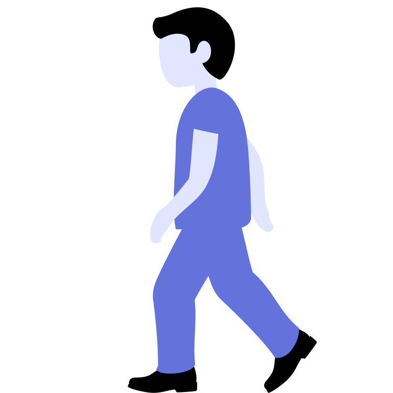

Speed and Time
If a person walks at
20 km/hr
instead of
15 km/hr
, he travels
30 km
more in the same time. The actual distance travelled is:
Q
15 km/hr

20 km/hr
+30 km
Walks at
20 km/hr
instead of
15 km/hr
, travels
30 km
more. Find actual distance.
15 km/hr
20 km/hr (+30 km)
Given
First case distance =
D km
Second case distance =
D + 30 km
Step 1
Time is the same.
Time = Distance ÷ Speed
D
15
=
D + 30
20
Step 2
20D
=
15(D + 30)
20D
=
15D + 450
(Subtract 15D from both sides)
Step 3
5D
=
450
Divide both sides by 5
D
=
90 km
G
First case =
D
Second case =
D + 30
1
D
15
=
D + 30
20
2
20D = 15D +
450
3
D =
90 km
A
100 km
B
70 km
C
80 km
D
90 km